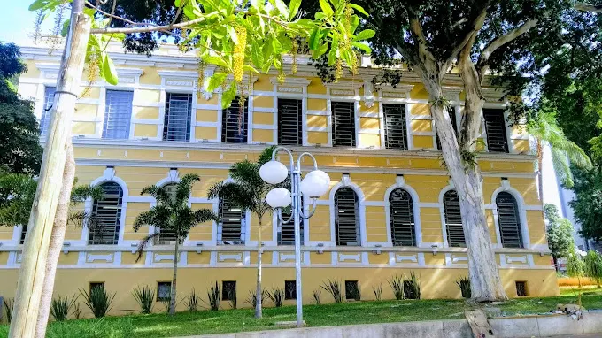
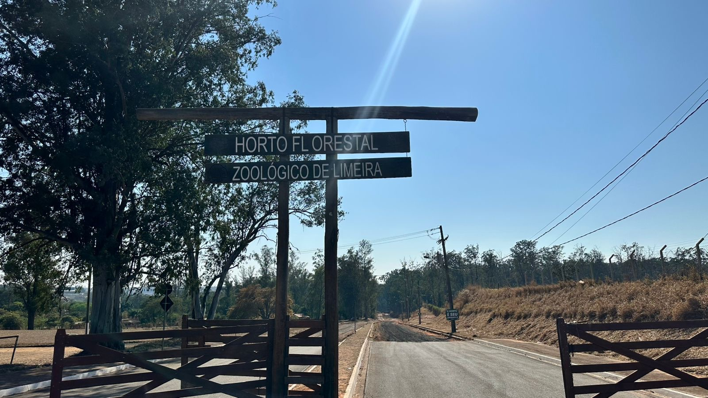
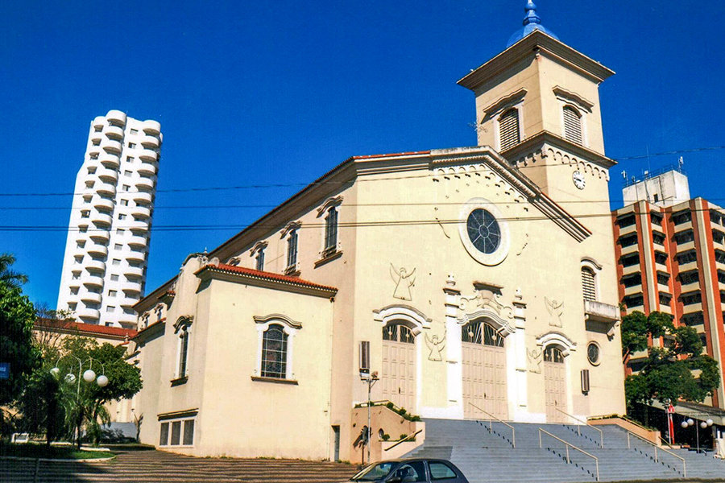
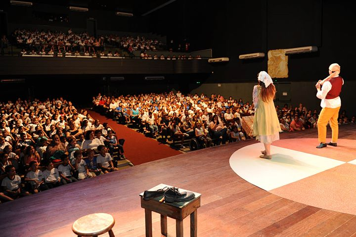

turistico
lugares em limeira para se visitar.

Museu Major José Levy Sobrinho
Conta a história da cidade com objetos, documentos e exposições culturais em um belo casarão histórico.

Hipica
Um dos maiores parques da região, com lagos, pista de caminhada, áreas esportivas e espaço para lazer em família.

Horto Florestal de Limeira
Área verde ideal para caminhadas, piqueniques e contato direto com a natureza.

Igreja Nossa Senhora das Dores (Matriz)
Um dos marcos históricos mais importantes da cidade, com bela arquitetura e tradição religiosa.

Teatro Vitória
Principal espaço cultural da cidade, com peças, shows e apresentações artísticas variadas.